Des photographies glanées au fil des jours : d’autres lieux, d’autres lumières et d’autres regards.
22 photographies
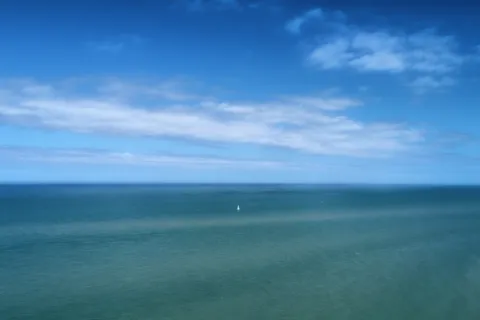
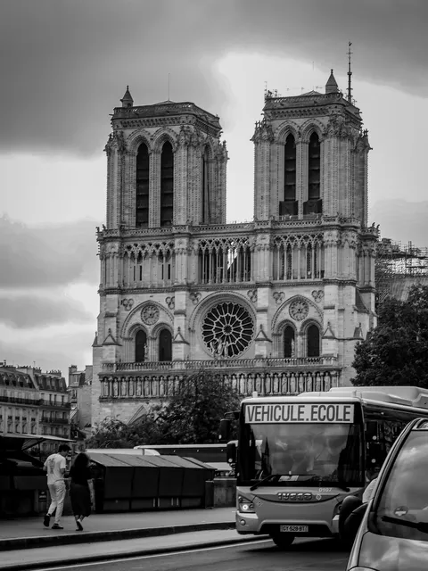
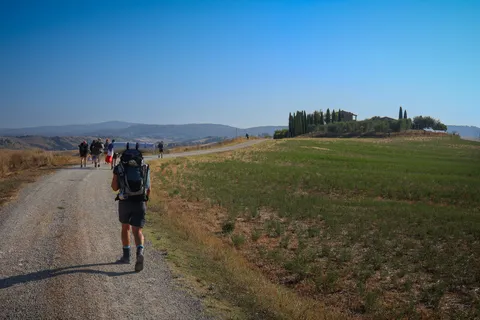
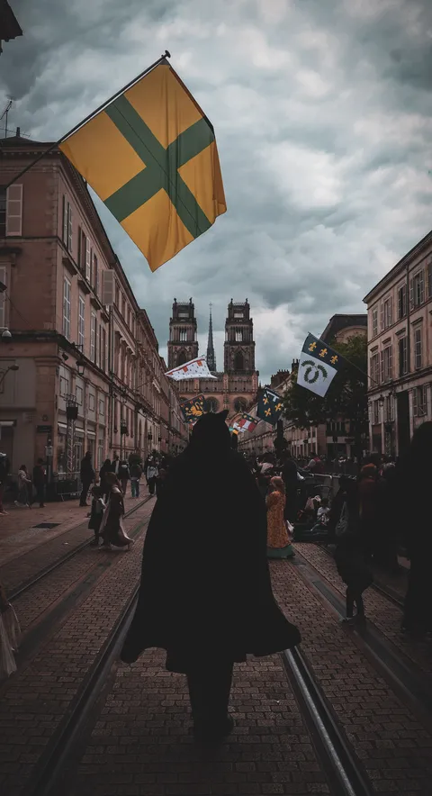
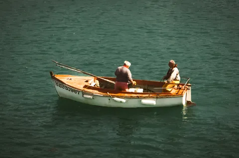
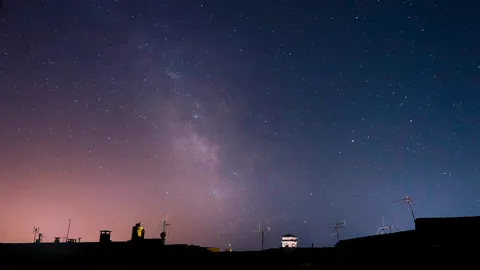
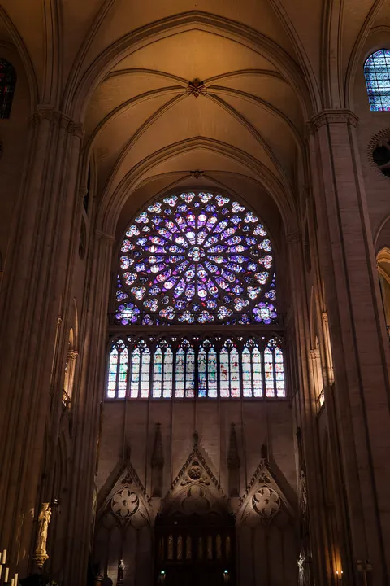
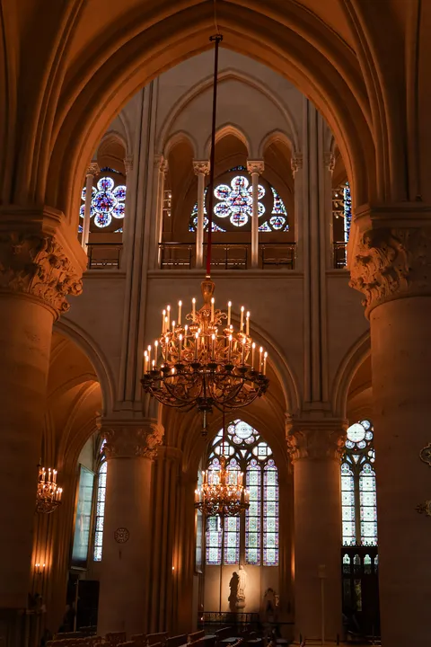
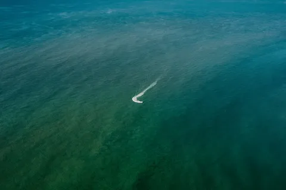
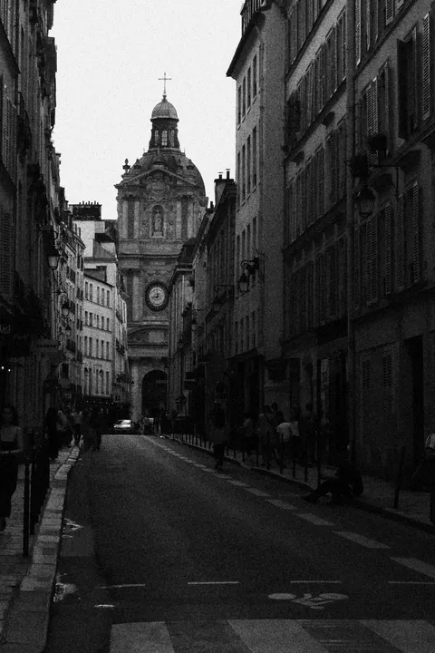
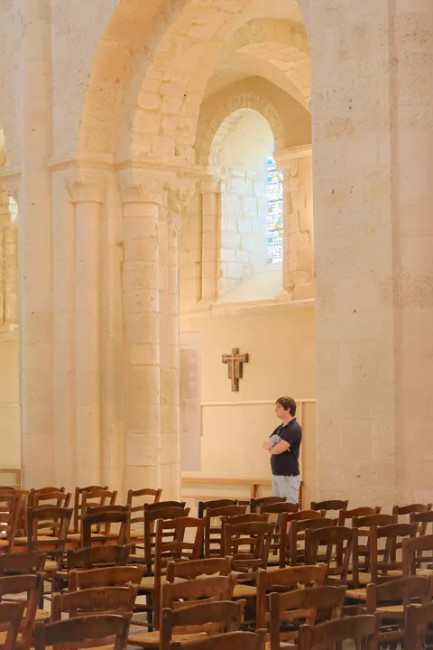
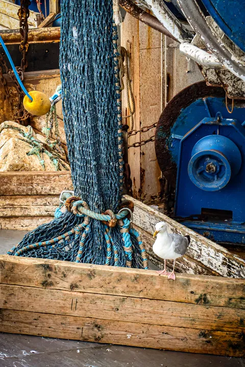
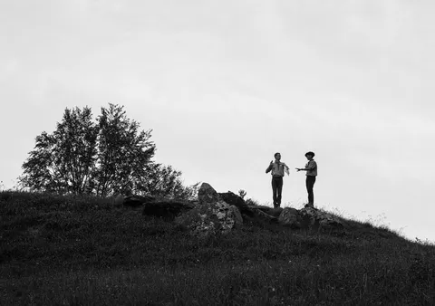
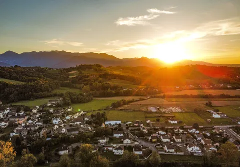
Et si on en parlait ?
Mariage, match, concert ou portrait : racontez-moi votre projet, je vous réponds sous 24 h.